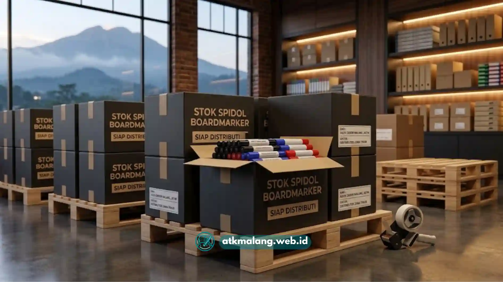

Harga spidol boardmarker grosir Malang langsung dari agen umumnya bervariasi tergantung merek, jumlah pembelian, dan kualitas tinta, sehingga pembeli sebaiknya membandingkan harga per lusin dari beberapa agen sebelum memutuskan kerja sama rutin.
Harga grosir spidol boardmarker biasanya turun signifikan mulai dari pembelian satu kardus atau puluhan lusin sekaligus untuk pasokan Alat Tulis Kantor.
Selisih harga antar agen di Malang umumnya dipengaruhi oleh sumber pasokan, biaya distribusi, dan skala usaha agen tersebut di wilayah distribusinya.
Harga termurah belum tentu paling menguntungkan jika kualitas tinta dan tingkat kecacatan produk tidak diperhitungkan, jadi Anda tetap perlu memastikan jaminan mutunya.
Daftar Isi
- Berapa Kisaran Harga Spidol Boardmarker Grosir di Malang?
- Apa Saja Faktor yang Memengaruhi Harga Spidol Boardmarker Grosir?
- Bagaimana Cara Mendapatkan Harga Spidol Boardmarker Termurah Langsung dari Agen?
- Apakah Harga Termurah Selalu Menjadi Pilihan Terbaik?
- Bagaimana Cara Membandingkan Penawaran Harga dari Beberapa Agen di Malang?
Negosiasi harga lebih mudah dilakukan oleh pembeli yang sudah memiliki riwayat transaksi rutin dengan agen suplai perlengkapan kantor yang sama.
Membandingkan harga sekaligus dengan kebutuhan Alat Tulis Kantor lain seperti pulpen dan spidol whiteboard dapat meningkatkan posisi tawar pembeli.
Bagi pemilik toko ATK maupun pengurus koperasi sekolah di Malang, mengetahui gambaran harga grosir menjadi langkah awal sebelum menentukan agen mitra tetap.
Harga yang kompetitif membantu menjaga margin keuntungan toko sekaligus menjaga harga jual eceran tetap terjangkau bagi konsumen akhir maupun instansi.
Berapa Kisaran Harga Spidol Boardmarker Grosir di Malang?
Kisaran harga spidol boardmarker grosir di Malang secara umum dapat bervariasi cukup lebar tergantung merek dan kualitas tinta yang dipilih oleh pembeli.
Harga per batang Alat Tulis Kantor menjadi lebih rendah secara signifikan seiring bertambahnya jumlah unit yang dibeli dalam satu transaksi.
Sebagai gambaran umum, agen biasanya menerapkan tingkatan harga bertahap, misalnya harga per lusin untuk pembelian kecil, hingga harga per kardus berisi puluhan lusin.
Harga khusus sering diberlakukan untuk pembelian dalam jumlah sangat besar seperti pesanan dari distributor cabang atau reseller yang menjualnya kembali.
Karena variasi ini, calon pembeli disarankan menanyakan daftar harga lengkap sesuai tingkatan volume pembelian, bukan hanya berpatokan pada harga eceran satuan.

Pembelian spidol dalam kemasan kardus memberikan potongan harga yang jauh lebih besar.Apa Saja Faktor yang Memengaruhi Harga Spidol Boardmarker Grosir?
Faktor yang memengaruhi harga spidol boardmarker grosir meliputi merek dan kualitas tinta, volume pembelian, serta biaya distribusi langsung dari produsen ke agen.
Tingkat persaingan antar distributor maupun agen suplai Alat Tulis Kantor di wilayah yang sama juga sering menyebabkan penyesuaian harga di pasar.
Merek dengan reputasi tinta yang lebih tahan lama dan tidak mudah kering umumnya dibanderol lebih tinggi dibanding merek produk generik yang kurang dikenal.
Selain itu, agen yang mengambil stok langsung dari distributor resmi biasanya bisa menawarkan harga kompetitif dibanding agen yang membeli dari perantara karena rantai distribusinya pendek.
Faktor musiman juga turut berperan. Menjelang tahun ajaran baru atau masa ujian, lonjakan permintaan seringkali memengaruhi ketersediaan stok agen dan harga sementara.
Bagaimana Cara Mendapatkan Harga Spidol Boardmarker Termurah Langsung dari Agen?
Cara mendapatkan harga spidol boardmarker termurah langsung dari agen adalah dengan membeli dalam jumlah besar sekaligus, serta selalu membangun hubungan transaksi jangka panjang yang baik.
Membandingkan penawaran Alat Tulis Kantor dari beberapa agen sebelum menyepakati kerja sama tetap sangat direkomendasikan bagi sekolah atau instansi.
Pembeli yang rutin melakukan repeat order biasanya lebih mudah mendapatkan kelonggaran harga maupun termin kredit pembayaran dibanding pembeli baru tanpa riwayat.
Agen distributor cenderung memberi insentif kepada pelanggan rutin yang terbukti loyal, memesan dalam volume stabil, dan selalu lancar dalam pembayaran invoice.
Selain itu, membeli beberapa jenis produk sekaligus, misalnya spidol boardmarker bersamaan dengan pulpen, dapat menjadi bahan negosiasi potongan harga total.
Apakah Harga Termurah Selalu Menjadi Pilihan Terbaik?
Harga termurah tidak selalu menjadi pilihan terbaik karena kualitas tinta yang rendah dapat meningkatkan tingkat kecacatan produk yang Anda beli untuk instansi atau toko.
Biaya retur dan komplain dari konsumen maupun pegawai yang menggunakan Alat Tulis Kantor tersebut justru dapat mengurangi margin keuntungan Anda.
Pembeli sebaiknya selalu mempertimbangkan rasio antara harga yang dibayarkan dan tingkat keluhan produk, bukan semata-mata terpaku pada besaran harga per lusin semata.
Sebuah produk dengan harga sedikit lebih tinggi namun tingkat kecacatan rendah dipastikan jauh lebih menguntungkan dalam pengelolaan anggaran jangka panjang.
Produk termurah yang tintanya cepat kering, susah dihapus, atau mudah macet justru menyebabkan Anda harus melakukan pembelian ulang lebih sering dari seharusnya.
Bagaimana Cara Membandingkan Penawaran Harga dari Beberapa Agen di Malang?
Cara membandingkan penawaran harga dari beberapa agen di Malang adalah dengan selalu meminta rincian daftar harga tertulis atau katalog produk resmi dari masing-masing agen.
Pastikan Anda mencatat satuan harga dan jumlah minimal order yang diwajibkan untuk pengadaan Alat Tulis Kantor, kemudian samakan basis perhitungannya secara matematis.
Kesalahan umum saat membandingkan daftar harga adalah membandingkan harga per buah dari satu penyuplai dengan harga per lusin dari penyuplai lain tanpa konversi satuan.
Untuk menghindari kekeliruan perhitungan ini, sebaiknya seluruh penawaran yang ada dikonversi ke nominal harga satuan terkecil (per batang) sebelum membuat perbandingan akhir.
Mendapatkan daftar harga grosir Malang termurah menuntut kecermatan dalam mengevaluasi penawaran secara adil, melihat kualitas, dan menghitung biaya tak terduga lainnya.